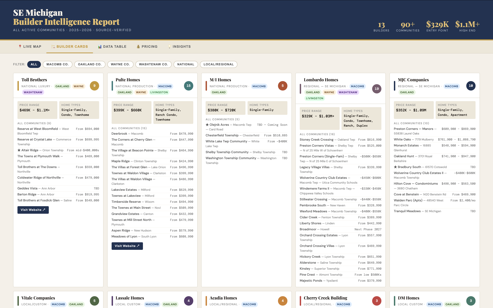

Data · Interactive report
Builder Insights
A source-verified report on 13 Southeast Michigan builders and 90+ communities — with a county-filterable map, builder cards, a sortable price table and a pricing chart.
UX · Project Coordination · Software
With degrees in psychology and computer science, I live where people and technology meet. I listen to what a team is trying to do, then build the tools, processes and experiences that help them work smarter, not harder.
Front-end development and team projects from my time at Ford and AAA's Hatch Garage innovation team.
“If we did all the things we are capable of, we would literally astound ourselves.”— Thomas Edison
People call me a do-er. By the time someone finishes describing an idea, I’m already figuring out how we make it happen — in a way that fits how they already work, not against the grain.
Waterford, Michigan. Open to remote and hybrid roles in UX, project coordination and software engineering.